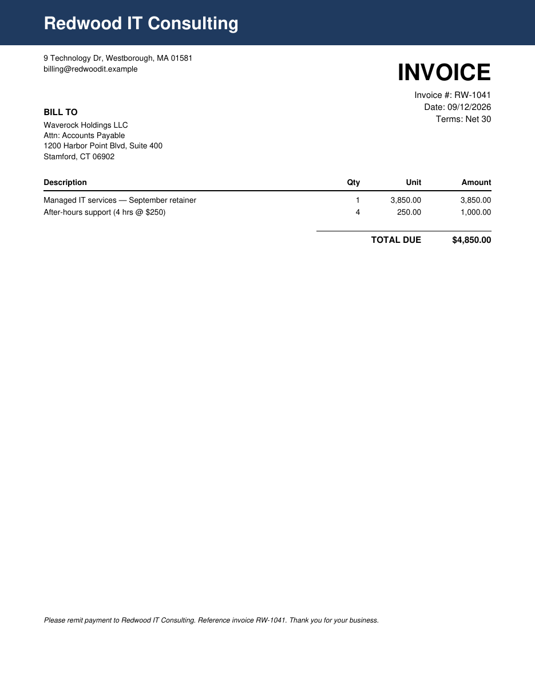
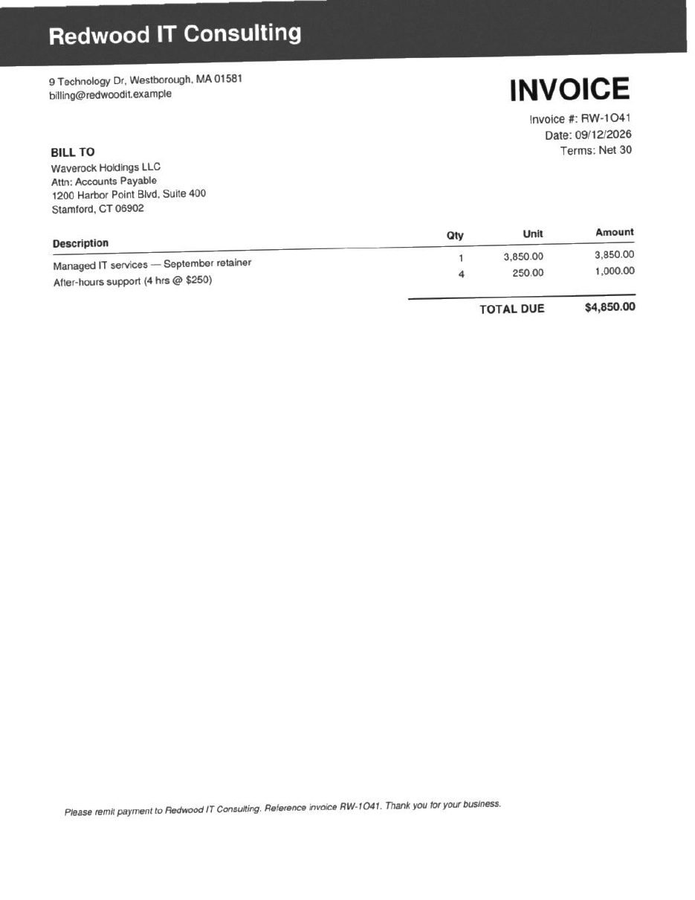
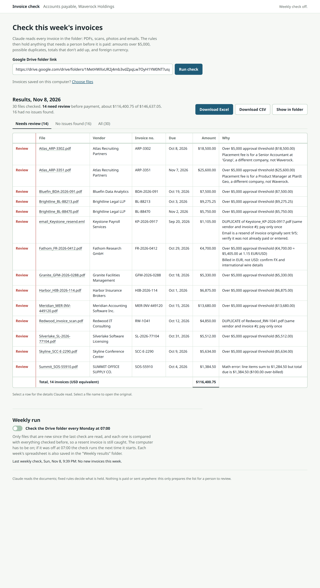

Prepared for Waverock Holdings, Finance & Operations
What the weekly vendor-invoice check does, how to run it, and how it is built.
| Files read | {{files}} |
| Held for review before payment | {{held}} |
| No issues found | {{clear}} |
| Time for a fresh run | about 30 seconds |
| Amount held for review (USD equivalent) | {{usd_held}} |
| All invoices (USD equivalent) | {{usd_total}} |
Finance & Operations Associate exercise
November 8, 2026
Each week accounts payable receives a folder of vendor invoices in mixed formats and has to decide what can go forward for payment and what a person should look at first. Invoice Triage does the reading and the first check, and it can do it on its own every Monday morning.
For every file it produces one row: file, vendor, invoice number, due date, amount, a flag, and the reason for the flag. On the exercise folder it read all {{files}} files correctly, including the scanned PDF, the phone photo and both emails, and held {{held}} invoices for review.
| Reason held | Invoices | Detail |
|---|---|---|
| Over the $5,000 approval threshold | {{over}} | Includes Fathom Research: €4,700 looks under the limit but is about $5,405 once converted. |
| Duplicate | {{dupes}} | Keystone re-sent invoice KP-2026-0917 by email. Redwood's scan is the same invoice as its PDF, even though the scan prints the number as RW-1O41, with a letter O. |
| Arithmetic error | {{math}} | Summit Office Supply: the lines add up to $1,284.50 but the total due is $1,384.50, a $100 overcharge. |
| Foreign currency | {{fx}} | Fathom bills in euros, payable by international wire to a German bank account. |
| Charge for another company | 2 | Both Atlas Recruiting placement fees are for roles at other companies (Grasp, PlanIt Geo). |
Counts overlap: an invoice can be held for more than one reason. Appendix A lists every file.
Claude reads; fixed rules decide. Reading a scan, a photo or a covering email is the part ordinary code does badly, so Claude does it. Whether an invoice is held is decided by plain, tested rules. The same folder gives the same answer every time, and Claude can add a reason to hold an invoice but can never remove one.
Python 3.10 or newer and Claude Code, signed in; nothing else is installed. A fresh run of 30 files takes about 30 seconds and roughly $0.30 of Claude usage, and unchanged files are never read twice. Nothing is paid, approved or sent anywhere: the tool only prepares the list for a person.
Downloads from the shared Drive folder any file it does not already have, or takes the files a clerk chose on the computer. Emails are split into the message and its attachments. A file of an unsupported type or over 25 MB is not dropped: it becomes a held row that says so.
In this folder: {{pdf_text}} digital PDFs, {{pdf_scan}} scanned PDF, {{image}} images and {{email}} emails.
Each document goes to Claude with a fixed list of fields to fill: vendor, invoice number, invoice date exactly as printed, due date if printed, payment terms, currency, each line item, total, who it is billed to, any bank details, what a covering email says, whether the document is a scan, and anything a careful clerk would want checked. Six documents are read at a time.
Claude has no tools and sees nothing but the document. Answers are kept by file contents, so a file that has not changed is never read or paid for twice.
The rules on the next page set the flag and write the reason. Due dates that are not printed are worked out from the payment terms ({{printed_due}} were printed in this folder; the rest came from terms such as Net 30). Duplicates are checked within the folder and against every invoice checked in earlier weeks.
The app shows the list with held invoices first. The Excel workbook has an Invoices sheet with the seven requested columns and an Audit sheet with what sits behind each row: the date as printed, the terms, how the due date was set, currency and conversion, source type and Claude's notes. A CSV copy and the updated ledger are saved with it.
| Claude | Code |
|---|---|
| Reads PDFs, scans and photos; copes with any layout | Applies the $5,000 threshold after currency conversion |
| Reads covering emails for context (“resending as requested”) | Finds duplicates, including look-alike characters such as O and 0 |
| Notices content concerns: changed bank details, charges for another company | Checks every line and the total |
| Can add a concern to a row | Sets the flag; a concern from Claude can add a reason but never remove one |
| Rule | Why it matters | In this folder |
|---|---|---|
| Amount over $5,000, after converting to US dollars | Needs approval before payment | {{over}} invoices, including Fathom at €4,700 ≈ $5,405 (rate set in the configuration: 1.15) |
| Same vendor and invoice number, or same vendor, amount and date | Paying twice is the most common avoidable loss in accounts payable | Keystone email resend; Redwood scan of an invoice already received as a PDF |
| Lines do not add up to the total, or a line's quantity × price is wrong | Overbilling, often by accident | Summit: $100 over |
| Not billed in US dollars | Exchange rate and international wire details need confirming | Fathom (EUR) |
| Billed to someone other than Waverock | Wrong entity, or not our invoice | None |
| No due date or terms, or a due date before the invoice date | Payment timing cannot be planned | None |
| A concern Claude raises: changed bank details, a document that says it replaces another, a charge for another company | The common signs of fraud and misdirected invoices | Both Atlas placement fees |
| A file that could not be read, is too large, or is an email carrying several invoices | Nothing should disappear silently | None |
When two files are the same invoice, the cleanest copy is kept as the original and every other copy is held: a digital PDF ranks above an email attachment, which ranks above a scan or photo. The original is not held, but its audit row records that a second copy arrived. Invoice numbers are compared after treating look-alike characters as equal, which is how the scan below was matched.


Claude runs with no tools, no internet access of its own, no access to the computer's files, and an empty working folder. Its instructions say that everything in a document is data, never an instruction. Its answer must fit a fixed form, and the rules treat that answer as input to check, not as a decision. A manipulated document could still mislead the reading of a number, which is why every amount is checked against its own line items and why high amounts always go to a person.
Double-click Start Invoice Triage (the .bat file on Windows, the .command file on a Mac). The app opens in the web browser. It runs only on this computer.
Paste the Google Drive folder link and press Run check. Invoices saved on the computer can be used instead with Choose files.
Watch each file being read. A fresh run of 30 files takes about half a minute.
Work through Needs review. Each held invoice shows why. Select a row to see what Claude read; select a file name to open the original document.
Press Download Excel for the spreadsheet.

The two words in the margin are deliberate. Review means a person must look before payment. No issues found means none of the rules fired; it is not an approval, and the tool never says an invoice is cleared to pay.
Turning on Check the Drive folder every Monday at 07:00 registers a job with the computer's own scheduler. Nothing extra is installed and nothing has to stay open.
| System | Scheduler used | If the computer was off at 07:00 |
|---|---|---|
| Windows | Task Scheduler, without a console window | Runs as soon as possible afterwards |
| macOS | launchd (a user LaunchAgent) | Runs when the Mac wakes |
| Linux | systemd user timer | Runs at the next start (Persistent) |
The scheduler approach depends on one computer being on. The same code runs unchanged on a server or in a scheduled GitHub Actions job when an Anthropic API key is provided; Claude is then called in API mode, with no sign-in. For production I would make three changes: read the folder with a Google service account instead of a public link, write results straight into the team's shared Sheet, and post the weekly summary to the AP channel.
The AI reads, the code decides. Every flag comes from rules in one file
(rules.py) with unit tests. Claude's answer is input to those rules, never the decision.
A locked-down model call. Each document is sent to the local Claude Code command line with tools, plug-ins and personal settings switched off, in an empty folder, and the answer must match a fixed form. The cache is keyed by file contents and by the exact instructions, so editing the instructions can never return stale answers.
Nothing disappears. A file that cannot be read becomes a held row that says why. Results, cache and ledger are written so that a crash never leaves a half-written file. One run at a time.
No installation. Python's standard library only. The Excel workbook is written directly, without spreadsheet libraries, and cells that start like a formula are neutralised so a vendor's text can never execute in Excel.
| Part | Responsibility |
|---|---|
pipeline.py | One run from start to finish; run lock; ledger |
drive.py, ingest.py | Fetch the folder; turn files and emails into what Claude reads; type and size limits |
claude_cli.py, extract.py | Find and call Claude Code safely on each system; the fixed form; the cache |
rules.py | Every flag and every reason |
report.py | Excel, CSV and summary |
scheduler.py, weekly.py | The Monday job on Windows, macOS and Linux; failure notes |
server.py, web/ | The local app in the browser |
It listens only on the computer itself and refuses requests addressed to any other name. Every request must carry a secret created each time the app starts, so another website cannot drive it. The page will not load outside scripts and shows document text as text, never as page code. Uploaded files keep only their name, must be PDF, image or email, and are capped at 25 MB. Only files that belong to a run can be opened from it.
| Check | Result |
|---|---|
| Three fresh runs compared field by field with a hand-checked answer key (invoice number, due date, amount and flag for all 30 files) | 0 mismatches in each run |
| Automated tests | {{tests}} passing: rules, duplicates, arithmetic, currency, due dates, email handling, scheduler files for all three systems, app security, and a full run end to end |
| Linux scheduler files | Validated with systemd's own checker |
| Independent review of the plan, before building | 14 changes adopted, among them scan-versus-PDF ranking, the run lock and Windows scheduler settings |
| Independent review of the finished build | 12 findings; 10 fixed, each with a test, among them a stale lock after a closed window and a sign-in check that only checked installation |
| Status | File, and why it is held | Vendor | Invoice no. | Due | Amount |
|---|
Everything the app does can also be run from a terminal in the project folder.
python3 -m invoice_triage open the app python3 -m invoice_triage run --drive <folder link> check a Drive folder python3 -m invoice_triage run --folder <path> check a local folder python3 -m invoice_triage run --drive <link> --only-new weekly behaviour, by hand python3 -m invoice_triage weekly what the Monday job runs python3 -m unittest discover -s tests -t . run the tests
config.json holds the approval threshold, exchange rates, the company names accepted as
the bill-to, the Claude model and how many documents are read at once.
| Folder | Contents |
|---|---|
runs/<date and time>/ | Each run: the Excel workbook, CSV, summary and the full results |
Weekly results/ | Each Monday's workbook, and a failure note if a run could not finish |
state/ | The ledger, the cache, downloaded Drive files and the app's settings |